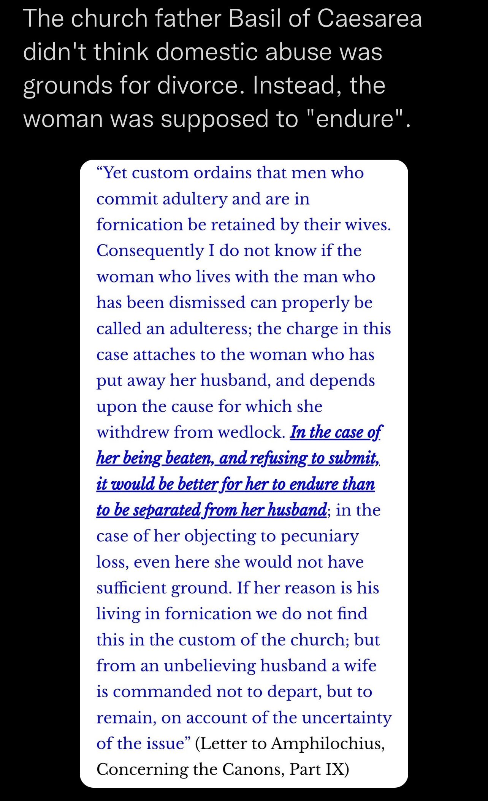

1 Corinthians 11:9
New International Version
neither was man created for woman, but woman for man.
This is entirely different in Islam
“Whoever does good, whether male or female, and is a believer, We will surely bless them with a good life, and We will certainly reward them according to the best of their deeds”
Quran 16:97
“I did not create jinn and humans except to worship Me.”
(Qur’ān 51:56)
The prophet (S) said:
“Yes. Woman are counterpart of men.”
Source: Sunan Abi dawud 236
Grade: Hassan (Al-Albani)
Al-Khattabi comments on this tradition, saying:
وقوله النساء شقائق الرجال أي نظائرهم وأمثالهم في الخلق والطباع فكأنهن شققن من الرجال وفيه من الفقه إثبات القياس والحاق حكم النظير بالنظير وأن الخطاب إذا ورد بلفظ الذكور كان خطابا بالنساء إلا مواضع الخصوص التي قامت أدلة التخصيص فيها
His saying that women are counterparts of men means their equals and their likeness in creation and nature, as if they split off from men. In jurisprudence, it is affirmation of the analogy and equivalence in rulings, equal by equal. Such that if the address is conveyed in the male grammatical form, it is also addressed to women, except for specific topics whose specification is established by evidence.
Source: Ma’ālim al-Sunan 1/79
https://www.alukah.net/fatawa_counsels/0/150981/%D9%84%D9%85%D8%A7%D8%B0%D8%A7-%D8%AE%D9%84%D9%82%D8%AA-%D8%A7%D9%84%D9%85%D8%B1%D8%A3%D8%A9%D8%9F/
Long Link
https://www.islamweb.net/ar/consult/index.php?page=Details&id=2141712
https://www.abuaminaelias.com/are-men-better-than-women-in-islam/
😳Biblical Jesus hates women 😳
Disclaimer:
Only use this note when Christians use Quran 4:34, or any kind of Quran verse or Hadith that doesn’t support feminism
❗️ Bible says that women can’t teach or have authority over man and should keep their mouth shut :
“And I do not permit a woman to teach or to have authority over a man, but to be in silence. For Adam was formed first, then Eve. And Adam was not deceived, but the woman being deceived, fell into transgression.”
(1 Timothy 2:12-14)
——
❗️ Women must submit in everything to their husbands :
“Wives, submit to your own husbands, as to the Lord. For the husband is the head of the wife even as Christ is the head of the church, his body, and is himself its Savior. Now as the church submits to Christ, so also wives should submit in everything to their husbands. (Ephesians 5:22-24)
“But I want you to understand that the head of every man is Christ, the head of a wife is her husband, and the head of Christ is God.”
(1 Corinthians 11:3)
“and so train the young women to love their husbands and children, to be self-controlled, pure, working at home, kind, and submissive to their own husbands, that the word of God may not be reviled.”
(Titus 2:4-5)
“Likewise, wives, be subject to your own husbands, so that even if some do not obey the word, they may be won without a word by the conduct of their wives,”
(1 Peter 3:1)
——
❗️ Women are not allowed to speak in churches :
“the women should keep silent in the churches. For they are not permitted to speak, but should be in submission, as the Law also says.”
(1 Corinthians 14:34)
——
❗️ Bible says that women are not made in the image of God :
“For a man indeed ought not to cover his head, since he is the image and glory of God; but woman is the glory of man.”
(1 Corinthians 11:7)
❗️ God punishes all women for a sin of one person by making childbearing painful, setting women against their husbands and making them submit to their husband :
“To the woman he said, “I will surely multiply your pain in childbearing; in pain you shall bring forth children. Your desire shall be contrary to your husband, but he shall rule over you.”
(Genesis 3:16)
❗️ Bible says that woman must marry her husband’s brother if her husband died :
“If two brothers are living together on the same property and one of them dies without a son, his widow may not be married to anyone from outside the family. Instead, her husband’s brother should marry her and have intercourse with her to fulfill the duties of a brother-in-law. The first son she bears to him will be considered the son of the dead brother, so that his name will not be forgotten in Israel. “But if the man refuses to marry his brother’s widow, she must go to the town gate and say to the elders assembled there, ‘My husband’s brother refuses to preserve his brother’s name in Israel—he refuses to fulfill the duties of a brother-in-law by marrying me.’ The elders of the town will then summon him and talk with him. If he still refuses and says, ‘I don’t want to marry her,’ the widow must walk over to him in the presence of the elders, pull his sandal from his foot, and spit in his face. Then she must declare, ‘This is what happens to a man who refuses to provide his brother with children.’ Ever afterward in Israel his family will be referred to as ‘the family of the man whose sandal was pulled off’!”
(Deuteronomy 25:5-10)
What Famous Church Fathers and Theologians Said About Women
Disclaimer:
Only use this note when the Christian criticizes Islam through a feminist lens
1.) Chrysostom (Archbishop of Constantinople and Doctor of the Church, 4th century):
“God maintained the order of each sex by dividing the business of life into two parts, and assigned the more necessary and beneficial aspects to the man and the less important, inferior matter to the woman.”
Source: “The Kind of Women who ought to be taken as Wives”
“ . . . the [female] sex is weak and fickle . . .”
Source: “Homily 9 on First Timothy”
—-
2.) Tertullian (The Father of Latin Christianity, 155-245):
”And do you not know that you are (each) an Eve? The sentence of God on this sex of yours lives in this age: the guilt must of necessity live too. You are the devil’s gateway: you are the unsealer of that (forbidden) tree: you are the first deserter of the divine law: you are she who persuaded him whom the devil was not valiant enough to attack. You destroyed so easily God’s image, man. On account of your desert—that is, death—even the Son of God had to die. And do you think about adorning yourself over and above your tunics of skins?”
Source: “De Cultu Feminarium (On the Apparel of Women), Chapter 1”
—-
3.) Origen (Theologian and Greek Father, 2nd-3rd centuries):
“Men should not sit and listen to a woman . . . even if she says admirable things, or even saintly things, that is of little consequence, since it came from the mouth of a woman.”
Source: “Fragments on 1 Corinthians”
——
4.) Clement of Alexandria (Theologian and Greek Father, 2nd century):
“Every woman should be filled with shame by the thought that she is a woman. . . . the consciousness of their own nature must evoke feelings of shame.”
Source: “Paedagogus (The Instructor) Book 2, 33.2 (?)”
—-
5.) Jerome (Priest, Theologian, Doctor of the Church and Latin Father, 4th-5th centuries):
“The Woman is the root of all evil.”
Source: “Phelips, The churches and the modern thoughts pg 203”
——
6.) Augustine (Bishop of Hippo, Doctor of the Church and Latin Father, 354-430):
“I don’t see what sort of help a woman was created to provide man with, if one excludes procreation. If a woman is not given to man for help in bearing children, for what help could she be? To till the earth together? If help were needed for that, man would have been a better help for man. The same goes for comfort in solitude. How much more pleasure is it for life and conversation when two friends live together than when a man and a woman cohabitate?”
“. . . the woman together with her own husband is the image of God, so that that whole substance may be one image; but when she is referred separately to her quality of help-meet, which regards the woman herself alone, then she is not the image of God; but as regards the man alone, he is the image of God as fully and completely as when the woman too is joined with him in one.”
Source: “On the Trinity, Book 12 7.10”
——
7.) Thomas Aquinas (Doctor of the church, 13th century):
“But a woman is naturally of less strength and dignity than man . . .”
Source: “Summa Theologica, Volume 1, Question 92, Article 1, Objection 2.”
“As regards the individual nature, woman is defective and misbegotten, for the active force in the male seed tends to the production of a perfect likeness in the masculine sex; while the production of woman comes from a defect in the active force or from some material indisposition, or even from some external influence.”
Source: “Summa Theologica, Vol. I, Q. 92, Art. 1, Reply to objection 1.”
——
8.) Martin Luther (German priest, theologian and Protestant Reformer, 16th century):
“For a woman seems to be a creature somewhat different from man, in that she has dissimilar members, a varied form and a mind weaker than man. Although Eve was a most excellent and beautiful creature, like unto Adam in reference to the image of God, that is with respect to righteousness, wisdom and salvation, yet she was a woman. For as the sun is more glorious than the moon, though the moon is a most glorious body, so woman, though she was a most beautiful work of God, yet she did not equal the glory of the male creature.”
Source: “Commentary on Genesis, Chapter 2, Part V, 27b.”
——
9.) John Calvin (French theologian, pastor and Protestant Reformer, 1509-1564):
On the first post-resurrection appearance of Jesus to women rather than to men: “I consider this was done by way of reproach, because they [the men] had been so tardy and sluggish to believe. And indeed, they deserve not only to have women for their teachers, but even oxen and asses. . . . Yet it pleased the Lord, by means of those weak and contemptible vessels, to give display of his power.”
Source: “Commentary on the Gospel of John (John 20)”
“On this account, all women are born that they may acknowledge themselves as inferior in consequence to the superiority of the male sex.”
Source: “Commentary on 1 Corinthians (1 Corinthians 11)”
——
10.) John Knox (Scottish clergyman and Protestant Reformer, 16th century):
“The Woman in her greatest perfection was made to serve and obey man . . . Nature I say, paints [women] further to be weak, frail, impatient, feeble and foolish: and experience has declared them to be inconstant, variable, cruel and lacking the spirit of counsel and regiment [or, leadership].”
Source: “The First Blast of the Trumpet Against the Monstrous Regiment of Women.”
——
Wife Beating in Christianity

——
Laws Regarding Women in Pre Modern Christian Societies
Credit to Quran and Bible Blog
Consent from both males and females for marriage was required, but a female could only refuse her father’s choice for a husband if the prospective groom showed “bad behavior” (Digesta, Book XXIII, Title 1).
——
Also, fathers and husbands could kill their daughters and wives, respectively, caught in the act of illicit sexual intercourse.
However, women were given some rights as well. For example, a woman could divorce her husband for multiple reasons, such as plotting against the government, attempting to kill her, accusing her of adultery without proof, etc.
Nevertheless, there were restrictions for women as well that were not applied for men. Per “ancient law”, the Digesta (Book L, Title 7), women were “excluded from all civil and public employments”. They could not be judges or magistrates and could not bring cases to court or be attorneys.
Source: https://droitromain.univ-grenoble-alpes.fr/Anglica/D50_Scott.htm#XVII
Also, in Book XXVIII, Title 1, it is stated that women were prohibited from being witnesses to wills, though they could act as witnesses in courts.
Source: https://droitromain.univ-grenoble-alpes.fr/Anglica/D28_Scott.htm#I
The same prohibition is mentioned in the Institutiones, Book II, Title 10. Along with children under the age of puberty, slaves, lunatics, and the deaf and dumb, women could not be witnesses to a will.
Source: https://droitromain.univ-grenoble-alpes.fr/Anglica/just2_Moyle.htm#X
While husbands could bring charges of adultery with proof, wives could not do the same. Following the older Roman laws under the emperors Severus and Antoninus, the Codex Justinianus (Book IX, Title 9) states that women:
“…have no right to bring criminal accusations for adultery against their husbands, even though they may desire to complain of the violation of the marriage vow, for while the law grants this privilege to men it does not concede it to women.”
Source: https://droitromain.univ-grenoble-alpes.fr/Anglica/CJ9_Scott.gr.htm#9
Regarding women convicted of criminal behavior, the Novellae (Book CXXXIV, Chapter 9) prohibited confining them to prisons. The reason given seems to have been that their “chastity” could be violated. Thus, she may be “kept under guard” but not confined to a prison. For more “serious” crimes, a woman could be placed in a convent.
Source: https://droitromain.univ-grenoble-alpes.fr/Anglica/N134_Scott.htm
In the case of adultery, an adulteress could be taken back by her husband within two years. If he did not take her back or died before taking her back, the woman would be confined to a monastery for the rest of her life and her property would be given to her children, parents, or even the monastery.
Source: Novellae, Book CXXXIV, Chapter 10; https://droitromain.univ-grenoble-alpes.fr/Anglica/N134_Scott.htm